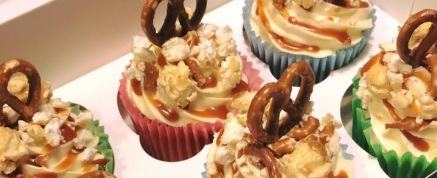
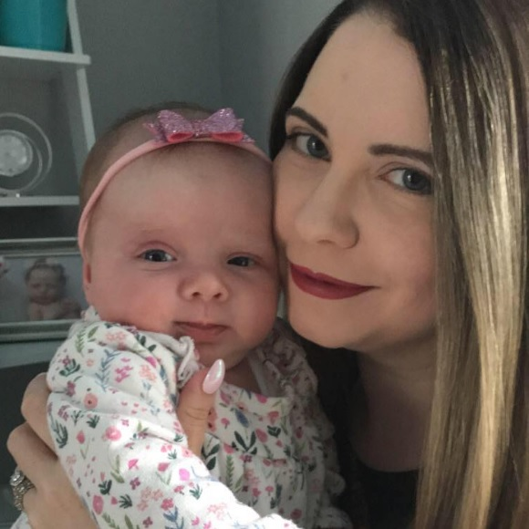

Hello and welcome to the Bite Size Bakery's Website! Feel free to browse through all of our custom cakes and bakes in our 'Menu' and 'Gallery' page.
If you like what you see, check out our Facebook and Instagram or head over to our 'Contact' page to place an order!
About The Bite Size Bakery

The Bite Size Bakery is a small, local bakery run single-handedly by Stephanie Sherrard since 2017. Now a mother to a small baby, Stephanie balances taking care of her baby and her business from her very own home kitchen!

The Bite Size Bakery accommodates all its customers with its novelty celebration cakes – Stephanie is open to all flavours, designs, and themes. Birthday cakes are the most popular order, though Stephanie has also baked for weddings, company-launch parties, and other events.
Although her novelty celebration cakes are what she is known for, Stephanie also offers a range of products and services such as small sweet treats (cupcakes, cake pops, rocky road squares…), homemade loaves of bread, and hot food for catering home events. All products are 100% homemade and freshly baked by Stephanie herself.
Stephanie is based in Waterford and, as of yet, only offers delivery service on select occasions.